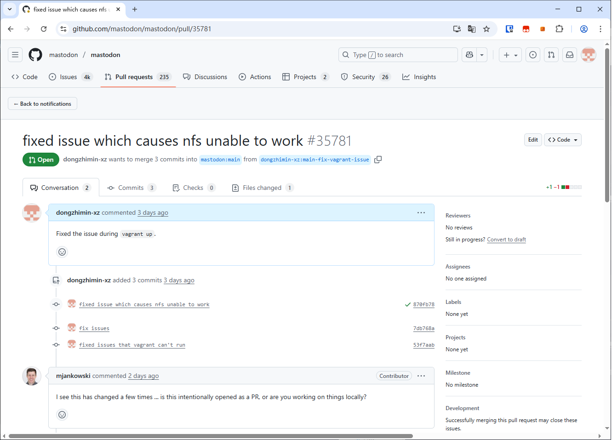

我之前就想对长毛象的代码进行深度地魔改，但是对其架构一窍不通，只能一步一步学。
对于想要学习别人的代码，就比如超级酷炫的小森林，也需要掌握搭建环境的方法，否则就会发现人家的main分支代码你根本跑不动😄
到我踩坑之前，我只知道，在vagrant up之后，再git checkout到其他的中版本，甚至大版本，至少需要在这个测试环境走一遍长毛象的更新流程。要么直接vagrant destroy。可到了差不多前两周的时候，我发现新建vagrant实例也不顶用了！于是提交了一个Issue，后来还把Vagrantfile给改了，提交了Pull Request。🥺

这是因为我踩坑太多导致改了又改😄
官方的管理员似乎也从来都不用vagrant来进行开发。
面向的读者
这个还是挺实用，难度也是略高的。希望大家都来看看。主要还是给自己看。
Vagrant的问题
这里也不发踩坑的图了，一来没帮助，二来也没这个时间重新踩这个坑
我翻了一下我一周以前的嘟文前后的键政别介意哈😄
原文：
#技术相关 #长毛象实例升级
本来我想写个博客的，但是问题无法解决还是算了🥹
昨天我把我的魔改部分合并进长毛象官方分支v4.4，然后用vagrant运行发现不能用了🥹输出的日志显示我魔改的部分代码有问题
好，我再检出到官方的v4.4.3版本，原封不动的版本
结果它显示缺少libvips，安装了以后又显示libvips版本不够🥹
之后还升级了vagrant虚拟机的ubuntu，升到22.04也没用，还有软件版本不够😡
最后升到Ubuntu 24.04，惊喜又来了，NFS挂载不了，挂载了以后，又给我报错🙃
现在分析下来，一开始在我魔改版代码上运行，我的代码本身就是有问题的，它确实与官方v4.4.3版本发生了冲突。此外，“官方纯净版”的长毛象v4.4.3也无法在Vagrantfile所配置的虚拟机上运行。这方面我当时就留意了报错信息，缺少libvips。补上了libvips以后，其他一个接一个的依赖又不行了。我用apt update && apt search查看了一下版本，发现那个Ubuntu版本的最新版的版本号是远低于长毛象v4.4分支所需版本的。
于是，我就手动升级了vagrant虚拟机的Ubuntu版本。接下来遇到的又一个大坑，就是Ubuntu24.04版的NFS挂载的主机目录，不能有中文！要去掉中文，就得先把NFS从任务管理器给停掉，否则一直占用文件夹，无法改名，没有耐心的小白往往就得把Google关掉重启电脑了😄。
来不及为前面的大坑哀悼，紧跟在中文bug后面的大坑是😅，虚拟机内，NFS的这个版本不能用udp挂载。这当然是很后面才处理掉的大坑。
修改Vagrantfile绕开UDP以后，等着我的大坑我记得好像是无法读取文件，反正安装ruby的时候就无法读取版本号，只会安装ruby3.0.0😅进一步的依赖就更别说了
虚拟机踩坑记
长毛象有一点非常好，就是文档非常完备。为什么长毛象功能这么少，内存消耗那么大，我还要用长毛象呢？因为我是一个技术小白，不论安装什么种类，什么分支的Fedi软件，我都要来看长毛象官方文档。这真不是我吹，这是事实。不知道联邦宇宙是不是长毛象的创始人发明的？懂的读者在评论区解释一下🥺
求求你把网络关闭
我根据官方文档https://docs.joinmastodon.org/dev/setup/#manual 安装了长毛象测试环境。又踩了不少坑。
首先，长毛象很难在无虚拟机的条件下在Windows下运行，除非使用WSL，本质上还是虚拟机。具体我没试过在Windows下跑长毛象，找了10分钟也没有找到不能在Windows下运行的依赖。总之软件包也不如Linux好管理。
VMWare
我首先在VMWare上安装了桌面版的Ubuntu。每次都需要花1小时！还需要安装open-vm-tools。
安装了官方文档所述的依赖和正确版本的Ruby以后，运行bundle install和yarn install，创建数据库角色。
在长毛象目录使用命令bin/rails db:setup初始化数据库。
注意⚠：
bin/rails db:setup命令会清除数据库！视环境变量而定，在这里会清除开发环境的数据库！
接着运行
1 | gem install foreman --no-document |
观察代码发现，在长毛象目录运行bin/dev也是等效的
测试服务器运行后，在浏览器输入http://localhost:3000 即可用官方文档所述的邮箱和密码以站长身份登录测试环境的长毛象实例。
坑1
以上步骤当你直接在Linux虚拟机内克隆长毛象代码，是肯定能运行的。但是，大坑来了，当你用VMWare共享文件夹，把你的代码文件共享进去，就会卡在yarn install编译失败，foreman start当然也是跑不起来的。它死在了Link这一步。这是因为在VMWare的共享文件夹内，是无法建立软链接的😅。（前面还有一个小坑，就是需要把你操作的非root用户给加入到共享文件夹的组里去）
坑2
那我把虚拟机内的文件夹共享出来行不行？且不说你辛苦开发的未提交代码会不会跟虚拟机一起随风而去了，光是用SMB共享出来（用网上邻居共享出来）。乍一看你可以用外面的SourceTree各种checkout代码，但到了commit的时候，就会出问题，它提示这个路径不对。反正我人麻了，最后把两个文件拷出来提交了，这波不亏。
VirtualBox
经过一天的摸鱼Google，第二天下班，我又在VirtualBox重新安装了一遍系统。这里需要用命令行开启允许共享文件夹链接，
1 | VBoxManage setextradata YOURVMNAME VBoxInternal2/SharedFoldersEnableSymlinksCreate/YOURSHAREFOLDERNAME 1 |
用文本编辑器来编辑虚拟机文件也是可以的。
先用ln -s测试了一下，确实可以。接着继续安装环境，yarn install也确实顺利完成了。发现确实可以启动。
美中不足的是，/api/v1/streaming/?的请求会得到500的状态码。具体原因还没吃透。这个坑无伤大雅，部署在生产环境和Vagrant上的长毛象都是101状态码。
回归Vagrant
Vagrant的原理其实也并不复杂，虽然我至今还没完全吃透😄。
这个软件其实也是用Ruby编写的，所以，它出BUG的时候，我还以为虚拟机里的长毛象在用外面的Ruby呢😅。
当你在你的新项目文件夹中，用命令行输入vagrant init时，它会自动生成一个Vagrantfile，也就是长毛象里的那个。这个文件虽然没有后缀，但其实是个ruby文件，遵循ruby语法，你就把它看作一个.rb文件好了。在使用编辑器时，高亮风格设置为Ruby。
这时候就用ruby的语法来解读一下vagrant到底做了什么：
在你使用vagrant up的时候，你没有生成过vagrant实例，也没有同名虚拟机，那么它就会正常运行。如果有同名虚拟机，vagrant就不会继续运行。首先它会下载一个vbox，并修改virtualbox虚拟机的配置。还会给你生成一个主机mastodon.local。启动后会挂载文件夹。
避坑：NFS类型的挂载不顶用了，rsync类型的挂载速度巨慢，把
Vagrantfile里那一行的type: "nfs"连着前面后面的逗号和后面的所有参数一起删掉，它就会自动用vbox共享文件夹挂载到Vagrantfile里的同样的位置去，并且自动允许设置软链接。虽然速度稍微慢一点，但是可接受，而且表现更加稳定了。
vagrant完成上述操作后，就会执行provision代码。也就是Vagrantfile里面安装依赖，并且初始化数据库，配置环境变量。
当你已经生成了相关虚拟机了，再运行vagrant up，那么vagrant就会运行除了provision以外的所有Vagrantfile代码。如果需要重新运行一遍provision，那么你只要在vagrant虚拟机启动后，运行一遍vagrant provision即可。为了避免vagrant destroy+vagrant up重装系统浪费时间和梯子流量，建议活用provision代码。
Vagrant的好处在于：当你用http://mastodon.local 登录时，你每次修改完代码，按下保存，系统就会自动刷新浏览器，经过我的测试，这是手动安装测试环境所体现不出来的。
后记
今天改完实例后，我又研究了一下小森林的代码，想学习一下markdown是怎么实现的。刚开始发现yarn install装不上依赖，发现原来是Vagrantfile没更新过，我把我改出来的代码贴一下
1 | # -*- mode: ruby -*- |
运行下来，发现main分支确实是他实例的代码。之后的研究过些天再继续。